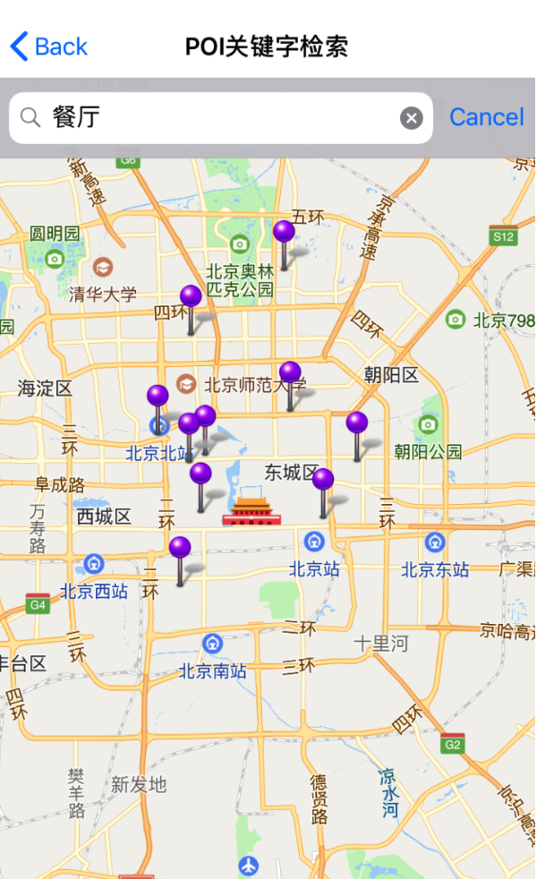
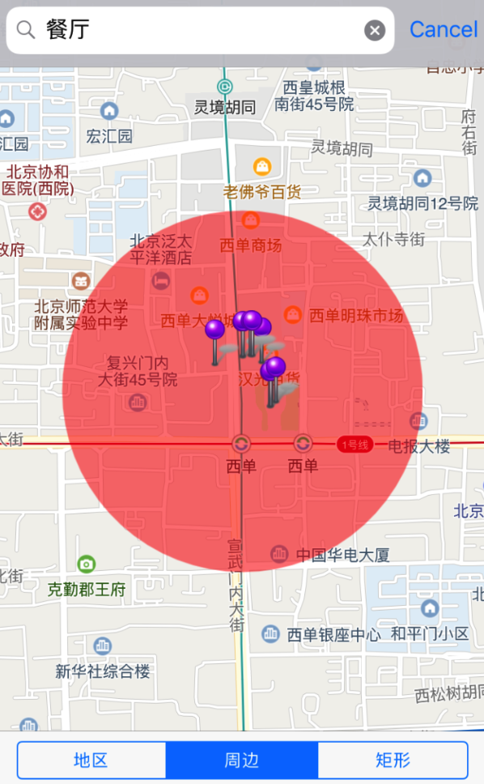
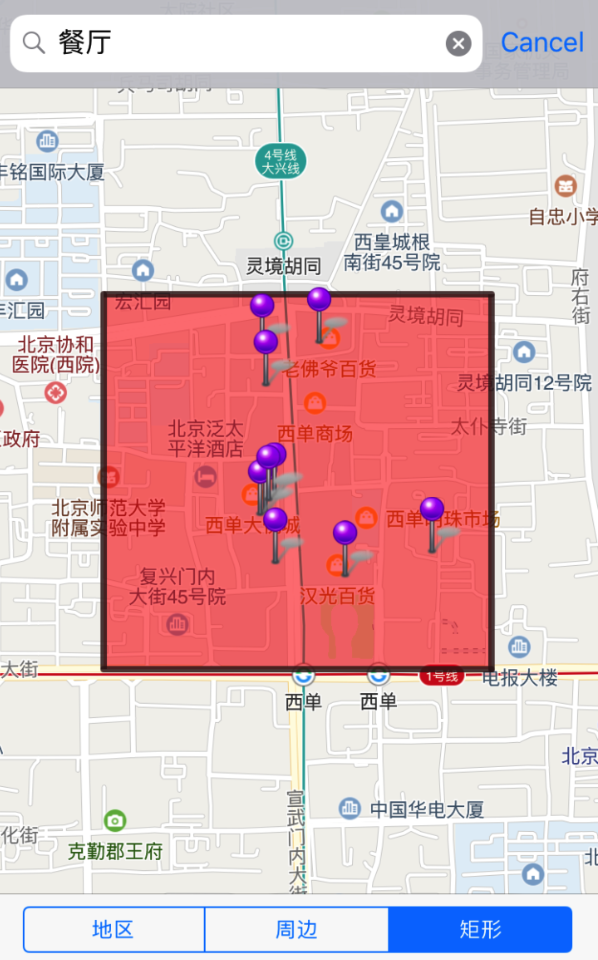

关键字搜索POI
构建关键字搜索参数
设置关键字搜索参数 QMSPoiSearchOption，keyword为必填字段
QMSPoiSearchOption poiSearchOption = [[QMSPoiSearchOption alloc] init]; [poiSearchOption setKeyword:@"餐厅"]; // 或者 poiSearchOption.keyword = @"餐厅";page_size 和 page_index 参数
page_size: 每页条目数，最大限制为20条，默认10条。
page_index: 为搜索结果的页数索引，第x页，默认为第1页。// 每页条目数 [poiSearchOption setPage_size:5]; 或者 poiSearchOption.page_size = 10; // 页数索引 [poiSearchOption setPage_index:3]; 或者 self.poiSearchOption.page_index = 3;filter参数
filter为筛选条件，用户通过设置特定的条件对搜索结果进行过滤，最多支持5个分类词。
搜索指定分类：
例如传入"category=公交站"则最终会被组装为filter=category=公交站，筛选出包含“公交站”的结果分类
[poiSearchOption setFilter:@“category=公交站”];搜索多个分类：
举例："category=大学,中学"（以英文逗号分隔筛选条件）筛选出包含“大学,中学”的结果分类
[poiSearchOption setFilter:@“category=大学,中学”];用户还可以传入NSString类型数组通过
setFilterByCategories:接口构建filter，最多支持5个分类词。NSArray <NSString *> *filterArray = [NSArray arrayWithObjects:@"烧烤", @"日料", @"中餐", nil]; [poiSearchOption setFilterByCategories:filterArray];注：腾讯地图POI分类关键词参考：http://lbs.qq.com/webservice_v1/guide-appendix.html
orderby参数
orderby为排序方式，目前仅支持周边搜索（boundary=nearby)。支持按距离由近到远排序，默认取值取值：_distance，以到boundary的中心点距离排序；当orderby为空时，以POI权重排序。
搜索方式
boundary 为搜索地理范围，支持三个范围函数: 指定地区搜索，周边搜索和矩形搜索。
指定地区搜索接口参数：
指定地区名称：boundary=region(city_name, [ auto_extend ], [ lat,lng ])
- city_name：检索区域名称， 城市名字，如北京市。
- auto_extend：可选参数。 取值1：默认值，若当前城市搜索无结果，则自动扩大范围； 取值0：仅在当前城市搜索。
- lat,lng：可选参数。 当用户使用泛关键词搜索时（如酒店、超市），这类搜索多为了查找附近， 使用此参数，搜索结果以此坐标为中心，返回就近地点，体验更优。
// 仅在北京搜索
poiSearchOption.boundary = @"region(北京,0)";
// 以 39.901268,116.9403854 为中心，返回就近地点搜索结果;
poiSearchOption.boundary = @"region(北京,0, 39.901268,116.9403854)";
用户也能通过以下两个接口设置指定区域地理范围：
setBoundaryByRegionWithCityName:(NSString *)cityName autoExtend:(BOOL)isAutoEntend;
// 以某一坐标为中心点在某城市进行检索
setBoundaryByRegionWithCityName:(NSString *)cityName autoExtend:(BOOL)isAutoEntend center:(CLLocationCoordinate2D)coordinate;
发起POI检索：
调用QMSSearcherAPI中的 searchWithPoiSearchOption: 发起指定区域检索
[self.mySearcher searchWithPoiSearchOption: poiSearchOption];
回调中出解析数据
当检索成功后，会调用到 searchWithPoiSearchOption: didReceiveResult: 回调函数，通过解析QMSPoiSearchResult 数据把所需的结果绘制到地图上。
- (void)searchWithPoiSearchOption:(QMSPoiSearchOption *)poiSearchOption didReceiveResult:(QMSPoiSearchResult *)poiSearchResult
{
// 获取结果中的第一个POI数据
QMSPoiData *poiData = [poiSearchResult.dataArray objectAtIndex:0];
NSLog(@"result is: %@", self.poiSearchResult);
// 详细POI数据解析，请参考demo
}
数据说明
poiSearchResult.count 可以获取本次搜索结果总数
poiSearchResult.dataArray 可以获取当前page_index搜索结果POI数组，每项为一个POI(QMSPoiData)对象
QMSPoiData 可以获取以下的属性：
| 属性 | 说明 |
|---|---|
| NSString *id_ | POI唯一标识 |
| NSString *title | poi名称 |
| NSString *address | 地址 |
| NSString *tel | 电话 |
| NSString *category | POI分类 |
| QMSPoiType type | POI类型，值说明：0:普通POI。1:公交车站。2:地铁站。3:公交线路。4:行政区划 |
| CLLocationCoordinate2D location | 坐标(经纬度) |
| NSArray *boundary | 轮廓，坐标数组，面积较大的POI会有，如住宅小区。数组里为CLLocationCoordinate2D类型数据，非必有字段 |
效果图示例：
poiSearchOption.boundary = @"region(北京,0)";
poiSearchOption.keyword = @"餐厅";
[self.mySearcher searchWithPoiSearchOption: poiSearchOption];
下图仅在地图上标记第一页的搜索结果

周边搜索接口参数
周边搜索：
圆形区域范围 ：nearby([ lat,lng ],radius<半径/米>, [ auto_extend])
- radius：半径，最大支持1000米 。
- auto_extend：可选参数，当前范围无结果时，是否自动扩大范围。取值：1，默认值，自动扩大范围； 0，不扩大。
- [ lat,lng ]：搜索结果以此坐标为中心，返回就近地点。
// 以 (39.908491,116.374328) 为中心，搜索半径500米范围
poiSearchOption.boundary = @"nearby(39.908491,116.374328,500,0)";
或调用 setBoundaryByNearbyWithCenterCoordinate: radius: autoExtend: 接口实现上述设置：
[poiSearchOption setBoundaryByNearbyWithCenterCoordinate:CLLocationCoordinate2DMake(39.908491,116.374328) radius:10 autoExtend:NO];
发起POI检索：
调用QMSSearcherAPI中的 searchWithPoiSearchOption: 发起周边区域检索
[self.mySearcher searchWithPoiSearchOption:poiSearchOption];
在回调中处理搜索数据
当检索成功后，会调用到 searchWithPoiSearchOption: didReceiveResult: 回调函数，通过解析QMSPoiSearchResult 数据把所需的结果绘制到地图上。
- (void)searchWithPoiSearchOption:(QMSPoiSearchOption *)poiSearchOption didReceiveResult:(QMSPoiSearchResult *)poiSearchResult
{
// 获取结果中的第一个POI数据
QMSPoiData *poiData = [poiSearchResult.dataArray objectAtIndex:0];
NSLog(@"result is: %@", self.poiSearchResult);
// 详细POI数据解析，请参考demo
}
QMSPoiData数据类说明请参考数据说明
效果图示例：
poiSearchOption.boundary = @"nearby(39.908491,116.374328,500,0)";
poiSearchOption.keyword = @"餐厅";
[self.mySearcher searchWithPoiSearchOption: poiSearchOption];
下图仅在地图上标记第一页的搜索结果

矩形搜索接口参数
矩形搜索：boundary=rectangle(lat,lng<左下/西南>, lat,lng<右上/东北>)
- rectangle里需传入矩形的左下角坐标和右上角坐标
// 在左下角(39.908491,116.374328)，右上角(39.918491,116.384328)的矩形内搜索
poiSearchOption.boundary = @"rectangle(39.908491,116.374328,39.918491,116.384328)";
或使用 setBoundaryByRectangleWithleftBottomCoordinate: rightTopCoordinate: 接口设置boundary：
[poiSearchOption setBoundaryByRectangleWithleftBottomCoordinate:CLLocationCoordinate2DMake(39.908491,116.374328) rightTopCoordinate:CLLocationCoordinate2DMake(39.918491,116.384328)];
发起POI检索：
调用QMSSearcherAPI中的 searchWithPoiSearchOption: 发起矩形区域检索
[self.mySearcher searchWithPoiSearchOption: poiSearchOption];
在回调中处理搜索数据
当检索成功后，会调用到 searchWithPoiSearchOption: didReceiveResult: 回调函数，通过解析QMSPoiSearchResult数据把所需的结果绘制到地图上。
- (void)searchWithPoiSearchOption:(QMSPoiSearchOption *)poiSearchOption didReceiveResult:(QMSPoiSearchResult *)poiSearchResult
{
// 获取结果中的第一个POI数据
QMSPoiData *poiData = [poiSearchResult.dataArray objectAtIndex:0];
NSLog(@"result is: %@", self.poiSearchResult);
// 详细POI数据解析，请参考demo
}
QMSPoiData数据类说明请参考数据说明
效果示例图：
[poiSearchOption setBoundaryByRectangleWithleftBottomCoordinate:CLLocationCoordinate2DMake(39.907293,116.368935) rightTopCoordinate:CLLocationCoordinate2DMake(39.914996,116.379321)];
poiSearchOption.keyword = @"餐厅";
[self.mySearcher searchWithPoiSearchOption: poiSearchOption];
下图仅在地图上标记第一页的搜索结果：

错误信息回调
当检索失败时，回调函数 searchWithSearchOption: didFailWithError: 会返回对应的错误信息
- (void)searchWithSearchOption:(QMSSearchOption *)searchOption didFailWithError:(NSError *)error
{
NSLog(@"%@",error);
}
更详细设置请参考demo